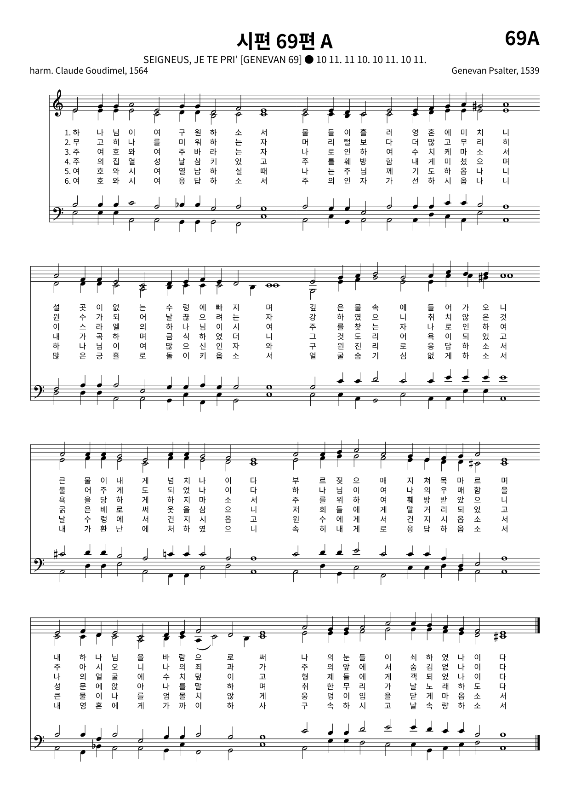

시편 69편 A
SEIGNEUS, JE TE PRI’ [GENEVAN 69] · 10 11. 11 10. 10 11. 10 11.
곡조: Genevan Psalter, 1539 · 화성: Claude Goudimel, 1564 · 가사: 개역한글판 시편 69편 편역(AI 초벌 편역판 · 신학 감수 전) · 6절
시편 69편은 2곡으로 나누어 실었습니다: A B · 이 곡은 시편 69편 가사의 1~6번째 절입니다.
악보 PDF MusicXML(출력용) MusicXML(반주용, 전주·반복 포함) 개역한글 시편 69편 읽기
악보
← 시편 68편 B 목록반주 재생(준비 중)시편 69편 B →
가사
1절
하나님이여 구원하소서
물들이 흘러 영혼에 미치니
설 곳이 없는 수렁에 빠지며
깊은 물속에 들어가오니
큰 물이 내게 넘치나이다
부르짖으매 지쳐 목마르며
내 하나님을 바람으로써
나의 눈들이 쇠하였나이다
하나님이여 구원하소서
물들이 흘러 영혼에 미치니
설 곳이 없는 수렁에 빠지며
깊은 물속에 들어가오니
큰 물이 내게 넘치나이다
부르짖으매 지쳐 목마르며
내 하나님을 바람으로써
나의 눈들이 쇠하였나이다
2절
무고히 나를 미워하는 자
머리털보다 더 많고 무리히
원수가 되어 날 끊으려는 자
강하였으니 취치 않은 것
물어 주게도 되었나이다
하나님이여 나의 우매함을
주 아시오니 나의 죄과가
주의 앞에서 숨김 없나이다
무고히 나를 미워하는 자
머리털보다 더 많고 무리히
원수가 되어 날 끊으려는 자
강하였으니 취치 않은 것
물어 주게도 되었나이다
하나님이여 나의 우매함을
주 아시오니 나의 죄과가
주의 앞에서 숨김 없나이다
3절
주 여호와여 주 바라는 자
나로 인하여 수치케 마소서
이스라엘의 하나님이시여
주를 찾는 자 나로 인하여
욕을 당하게 하지 마소서
주를 위하여 훼방 받았으니
나의 얼굴에 수치 덮이고
형제들에게 객 되었나이다
주 여호와여 주 바라는 자
나로 인하여 수치케 마소서
이스라엘의 하나님이시여
주를 찾는 자 나로 인하여
욕을 당하게 하지 마소서
주를 위하여 훼방 받았으니
나의 얼굴에 수치 덮이고
형제들에게 객 되었나이다
4절
주의 집 열성 날 삼키었고
주를 훼방함 내게 미쳤으며
내가 곡하며 금식하였더니
그것 도리어 욕이 되었고
굵은 베로써 옷을 삼으니
저희들에게 말거리 되었고
성문에 앉아 나를 말하며
취한 무리가 날 노래하도다
주의 집 열성 날 삼키었고
주를 훼방함 내게 미쳤으며
내가 곡하며 금식하였더니
그것 도리어 욕이 되었고
굵은 베로써 옷을 삼으니
저희들에게 말거리 되었고
성문에 앉아 나를 말하며
취한 무리가 날 노래하도다
5절
여호와시여 열납하실 때
나는 주님께 기도하옵나니
하나님이여 많으신 인자와
구원 진리로 응답하소서
날 수렁에서 건지시옵고
원수에게서 건지시옵소서
큰 물이 나를 엄몰치 않게
웅덩이 입을 닫게 마옵소서
여호와시여 열납하실 때
나는 주님께 기도하옵나니
하나님이여 많으신 인자와
구원 진리로 응답하소서
날 수렁에서 건지시옵고
원수에게서 건지시옵소서
큰 물이 나를 엄몰치 않게
웅덩이 입을 닫게 마옵소서
6절
여호와시여 응답하소서
주의 인자가 선하시옵나니
많은 긍휼로 돌이키옵소서
얼굴 숨기심 없게 하소서
내가 환난에 처하였으니
속히 내게로 응답하옵소서
내 영혼에게 가까이 하사
구속하시고 날 속량하소서
여호와시여 응답하소서
주의 인자가 선하시옵나니
많은 긍휼로 돌이키옵소서
얼굴 숨기심 없게 하소서
내가 환난에 처하였으니
속히 내게로 응답하옵소서
내 영혼에게 가까이 하사
구속하시고 날 속량하소서